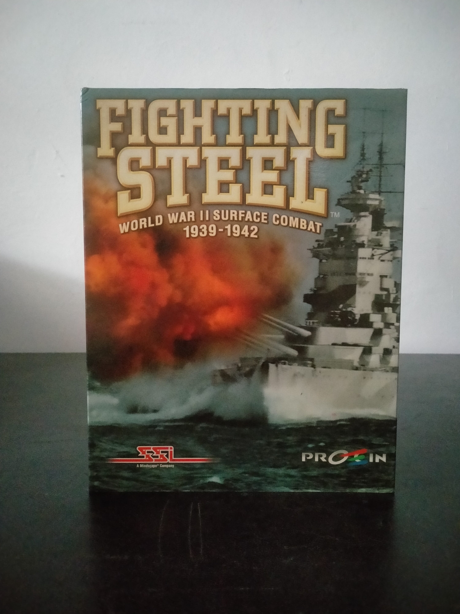

Ficha #000151
Fighting Steel
Fighting Steel: World War II Surface Combat 1939-1942 es una simulación táctica naval desarrollada por Divide By Zero Software y publicada por Strategic Simulations, Inc. en 1999. Recrea los combates de superficie de los primeros años de la Segunda Guerra Mundial y permite dirigir buques individuales o divisiones completas de las armadas británica, alemana, estadounidense y japonesa. Su motor representa en tiempo real barcos y escenarios tridimensionales, daños localizados, humo, visibilidad y condiciones diurnas o nocturnas, combinando control directo con gestión táctica de formaciones y maniobras. Incorpora más de noventa clases de navíos, escenarios históricos en los teatros del Atlántico y el Pacífico, cuatro campañas, encuentros generados por el ordenador, editor de escenarios y partidas por Internet para hasta cuatro jugadores. Esta edición española en caja grande fue distribuida por Proein e incluye manual en castellano, aunque el software permanece en inglés, circunstancia relevante para documentar su localización comercial.
- Formato
- Big Box
- Plataforma
- Win95 Win98
- Género
- Simulación naval Wargame Estrategia en tiempo real Simulación bélica
- Serie
- Todos Big Box
- Desarrollador
- Divide By Zero Software
- Distribuidor
- Strategic Simulations, Inc., Proein
- EAN
- 5390102429478
Contenido de la edición
- Caja de cartón Big Box
- CD-ROM en caja jewel case
- Manual de instrucciones en castellano
- Tarjeta de registro y encuesta de producto
Preservación
- Protección
- No determinado
- Formato recomendado
- BIN/CUE
- Jugable en virtualización
- Sí
Preservación recomendada mediante imagen BIN/CUE del CD-ROM original y digitalización del manual y de la tarjeta de registro. La ejecución virtual es viable en un entorno Windows 95/98 correctamente configurado, aunque debe comprobarse con el disco original si esta edición realiza verificación de presencia del CD.